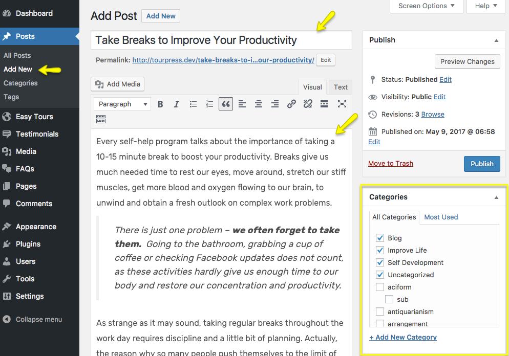
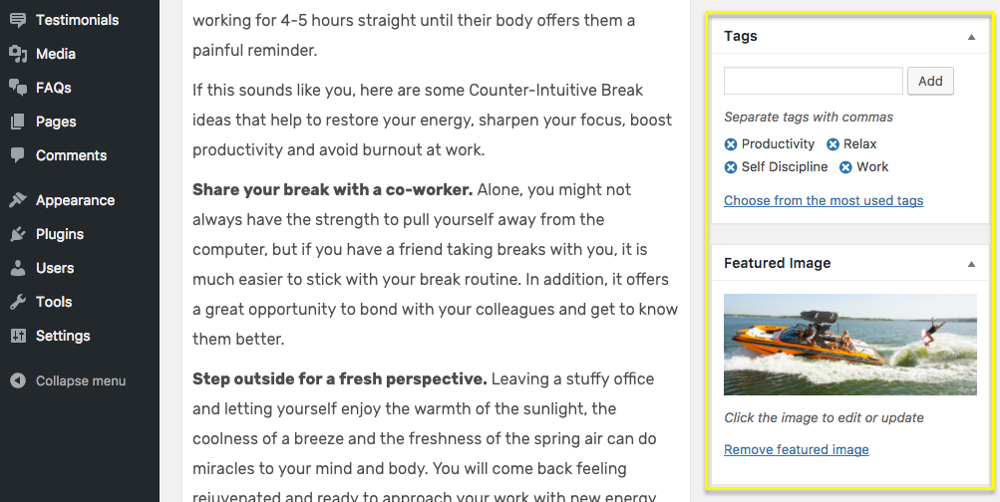
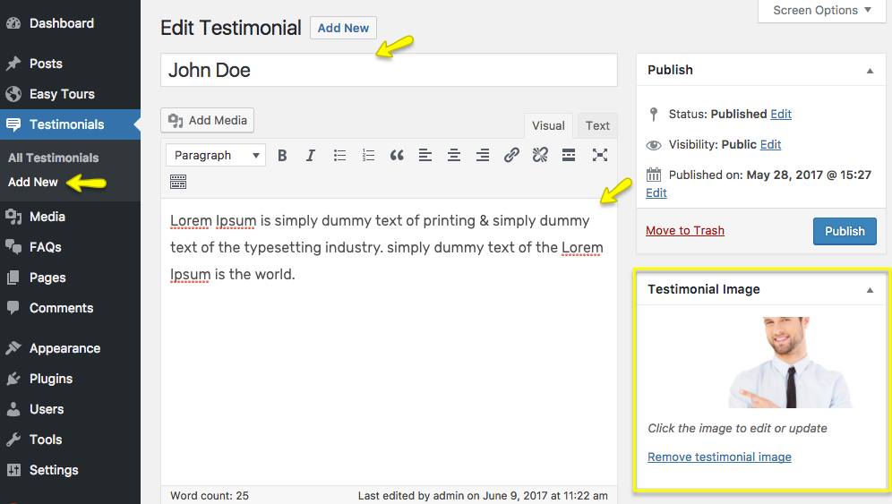
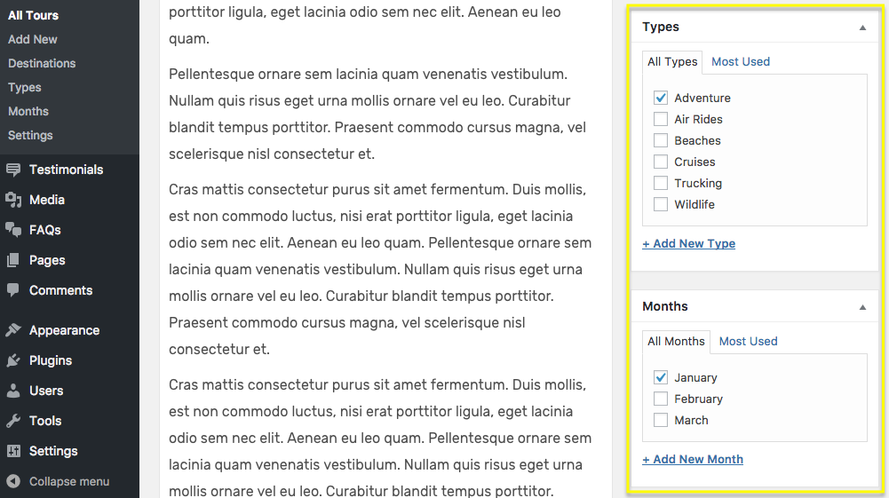
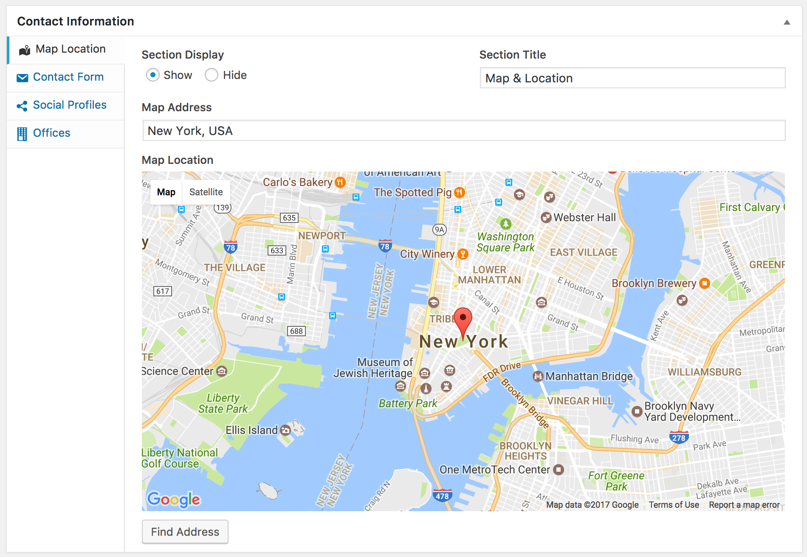

5. Add Contents
Add Blog Posts¶
You can create a new post from Posts > Add New page.
Add the post title, content, categories, tags and set a featured image (recommended size 750x300) then click the Publish button. As, you can see in the following screenshots.


You can see a Banner Configuration metabox area for every post where you can set a banner image and a custom title to display on it as displayed in the screenshot given below.

Add Testimonials¶
You add the testimonial from Testimonials > Add New page.
Add the testimonial author name, testimonial text and set the author photo (recommended size 150x150) then click the Publish button. As, you can see in the following screenshots.

You can see a Testimonial Details metabox area for every testimonial post where you can add the author designation and set a rating out of 5 as displayed in the screenshot given below.

Add Tours¶
You add the tours from Easy Tours > Add New page.
Add the tour name, tour content, destinations, types, months and set the tour featured image (recommended size 530x410) then click the Publish button. As, you can see in the following screenshots.


You can see a Tour Details metabox area with multiple vertical tabs for every tour post where you can add the tour's price, location, gallery images and other important details as you can see in the screenshot given below.
